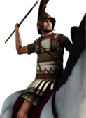
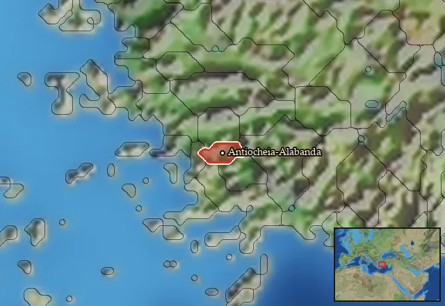

Alabandian Aspidophoroi


Class: heavy · Category: cavalry · Men per unit: 30
Reforms: Unlocked by Greek Reforms: Aspidophoroi
Description
These riders hail from the green valley of Alabanda, a Carian city perched between two cliffs of dark marble. Thanks to their wealth, these men have been able to afford costly equipment, consisting of fine tunics, reliable linothorakes with pteryges, lavish Phrygoboiotian, Phrygian, and Thracophrygian helmets with elaborate crests, and big spined round shields (aspides). They attack the enemy with javelins before closing in on them with their scythe-like drepana. As Carians, most of these soldiers hail from families who have made war their business for centuries. At the same time, they are familiar with the newest trends in Greek, Anatolian, Galatian, and Roman warfare, making them excellent dual-purpose cavalry.
Historical background
“Alabanda is also situated at the foot of hills, two hills that are joined together in such a way that they present the appearance of an ass laden with panniers. And indeed Apollonios Malakos, in ridiculing the city both in regard to this and in regard to the large number of scorpions there, said that it was an ‘ass laden with panniers of scorpions’. Both this city and Mylasa are full of these creatures, and so is the whole of the mountainous country between them. Alabanda is a city of people who live in luxury and debauchery, containing many girls who play the harp.” (Strab. 14.2.26C660-661)
Oh Strabo. Not again. What do you have against Caria? To be fair, Apollonios Malakos (probably meaning “the soft”) was actually born in Alabanda. But he left his home city to live in Rhodes, as Strabo himself (Strab. 14.2.26C661) attests, so should we really trust him? Even worse, he was known for his bad jokes: “Apollonius Malakos began his sojourn there (to Rhodes) earlier than Molon (of Alabanda), and when, much later, Molon came, the former said to him, “you are a late ‘molon’ (meaning late-comer)”, instead of saying, “late ‘elthon’ (the more common word for ‘comer’)” (Strab. 14.2.13C655). Hopefully at least one person who reads this ever laughs about one of the two jokes by Apollonios. And everybody else at least learned that Alabanda was relevant enough to be the subject of such ‘comic’ debates.
Alabanda was founded in time immemorial, its name meaning horse (Carian: ala) victory (Carian: banda) (Bean, s.v. ‘Alabanda’, in: The Princeton Encyclopedia of Classical Sites [1976]). Thus, cavalry was ingrained in Alabandan culture from the very beginning. By the Achaemenid period, the city had come under the rule of local monarchs. In 480 BC, the dynast Aridolis loyally supported the great king Xerxes I (r. 486-465 BC ) against the Greek alliance (Hdt. 7.195.1). Even though Alabanda was an inland city, Aridolis and his men served with the Persian navy. This of course fits the ubiquitous experience of Carians to fight abroad as mercenaries, and various Alabandan mercenaries appear in ancient sources (Polyb. 5.79.6; Unwin, Caria and Crete in Antiquity (2017), p. 133).
After the campaigns of Alexander the Great, Alabanda fell under Seleucid influence. In the middle (Fraser, Cities of Alexander the Great (1996), p. 42) or at the end of the 3rd century BC (Ma, Antiochos III and the Cities of Western Asia Minor (2000), p. 175), it was renamed to Antiocheia of the Chrysaorians. The religious and political league of the Chrysaorians – centred on the Chrysaorion near Stratonikeia – stretched across all of Caria, over lands variously controlled by or loyal to the Seleucids, Ptolemies, Antigonids, and Rhodians (Ma (2000), p. 175). In 201 BC, Alabanda’s territory was plundered by a starving Seleucid army (Polyb. 16.24.8), but it stayed loyal until the defeat of Antiochos III (r. 223-187 BC) at Magnesia in 190 BC, when this part of Caria fell under Rhodian influence. Like neighbouring Mylasa, Alabanda was too proud and powerful to simply accept this decision, and it resisted the new overlords from the start. Hoping that Rome would remove its support from Rhodes, the Alabandians instituted a cult of Roma including a temple in 188 BC (Liv. 43.6.6; Gabrielsen, Hellenistic Rhodes (1999), p. 90). In 170 BC, during the Third Roman-Macedonian War, they even sent military equipment and gold to Rome (Liv. 43.6.6). When the Romans still failed to intervene, Alabanda openly rebelled against Rhodes in 167 BC (Ma (2000), p. 251). Stratonikeia, Mylasa, and the mighty city of Kibyra on the border of Lycia and Phrygia joined them and ensured the following victory (Gruen, The Hellenistic World and the Coming of Rome (1986), p. 571).
After regaining its freedom, Alabanda maintained good relations with Pergamon and Rome without entering into a formal alliance (Gruen (1986), pp. 734-735). Philia (“friendship”) served the Alabandians well during the Mithridatic Wars, when Rome and its allies apparently protected it from Pontic incursions (Gruen (1986), p. 48). It stayed a free city at first and was later made the capital of a Roman conventus – a small province (Plin. nat. hist. 5.29.105). Despite his scorn, Strabo’s account quoted above demonstrates that Alabanda was a wealthy city even during imperial times, and other ancient authors back this up (Steph. Byz. s.v. Alabanda; Vitr. 5.6). Therefore, it will always have possessed a significant upper class who could afford horses and to fight on horseback, and we actually have some specific info on their equipment. The Roman historian Livy writes that, in 170 BC, the Alabandians sent 300 ‘scuta equestria’ to support the Romans against the Antigonids (Liv. 43.6.6). One might naturally assume that Livy is referring to the Roman scutum. However, ‘scutum’ first and foremost simply meant “shield” – just like its Greek equivalent, thureos (or thyreos) – and Livy was not a military specialist (Grant, Greek and Roman Historians (2004), p. 74). Therefore, we should rather follow the inherent logic of the situation: if the Alabandians sent cavalry shields to assist the Romans, these must have been the type of shield both Alabandians and Romans used at the time. But did Roman cavalry in 170 BC use the oval scutum?
Not really. Livy’s most important Greek source, Polybios – himself a former cavalry commander of the Achaian League – states that, by ca. 170 BC, Roman horsemen were using the same shields as Greek cavalry (Polyb. 6.25.7-11). Conveniently, a now lost, but often copied bronze plaque from Pergamon, crafted in the 180s BC, depicts both Greek and Roman cavalry at the Battle of Magnesia in 190 BC with the same type of shield: the round aspis (Taylor, The Attalid Victory at Magnesia on a Lost Plaque from Pergamon (2016), fig. 3). Often wrongly called a hoplon because of its usage by hoplites, this big and heavy shield was a very old design, but it was only in the years around 200 BC that Hellenistic horsemen started adopting it (see the unit descriptions of other Aspidophoroi). Panel no. 4 of Aemilius Paulus’ victory monument at Pydna, erected after the Roman victory over the Macedonians in this very spot in 168 BC, also shows a Roman horseman with an aspis (Taylor (2016), fig. 9), and so might the marble relief stele L119 from Amphipolis, which is dated to a similar time frame (Kosmidou/Malamidou, Arms and Armour from Amphipolis (2004), fig. 25). The latter, as the authors stress, could also depict a Hellenistic horseman, which would then at least support the idea that Alabandian cavalry also fought in this style. All of these shields, different from the ones used by hoplites, were spined – they had a long ‘spina’ in the centre, a metal boss on a wooden, well, spine.
Those depictions, as well as the evidence offered by Polybios, tell us that the Aspidophoroi wore linothorakes (Polyb. 6.25.3). As they were Carian, the Alabandians carry the drepanon, a very curved, scythe-like sword (Hdt. 5.112.2, 7.93). In RIS, this ‘third weapon’ is purely decorative. In other illustrations from Asia Minor, like a stele from Prousia in Bithynia (Nefedkin, Greek cavalry shields (2009), p. 361), Aspis-bearing cavalry is shown using javelins, and therefore the Alabandians, too, received those. Typically Hellenistic garments and a selection of Anatolian helmets like the Phrygboiotian, the Phrygian, and the Thracophrygian types complete their panoply.
Stats
| Rank in roster | ||
|---|---|---|
| Men per unit | 30 | █········· 8% |
| Attack | 16 | ████████·· 80% |
| Charge bonus | 23 | ████████·· 76% |
| Defence | 32 | █████····· 49% |
| · armour | 11 | ██████···· 64% |
| · defence skill | 16 | ███······· 28% |
| · shield | 5 | ██████···· 57% |
| Morale | 11 | ████······ 39% |
| Discipline | Normal | |
| Training | Highly trained | |
| Recruitment cost | 1,870 dn | ████······ 43% |
| Upkeep per turn | 750 dn | ███████··· 72% |
| Turns to recruit | 3 |
Weapons
| Primary | Secondary | Primary | Secondary | Primary | Secondary | Primary | Secondary | ||||
|---|---|---|---|---|---|---|---|---|---|---|---|
| Attack | 16 | 10 | Type | thrown · blade | melee · blade | Projectile | javelin | — | Ammunition | 2 | — |
| Charge bonus | 23 | 23 | Damage | piercing | piercing | Range | 50 | — | Properties | Used just before charging into combat | — |
Defence
| Primary | Secondary | Primary | Secondary | Primary | Secondary | Primary | Secondary | ||||
|---|---|---|---|---|---|---|---|---|---|---|---|
| Total | 32 | — | Armour | 11 | — | Defence skill | 16 | — | Shield | 5 | — |
Condition and terrain
| Hit points | 1 | Ground: scrub / sand / forest / snow | -2 / -1 / -8 / -1 | Charge distance | 40 | Formations | Square |
| Mount | medium horse |
Technical stats
| Time between blows (primary / secondary) | 2.5 s / 2.5 s | Extra fatigue in hot climates | 2 | Spacing between men: close / loose | 2.2 × 5.2 m / 3.3 × 7.8 m | Default ranks | 5 |
In battle: Very good stamina
Who can recruit it
A core roster unit for one faction, which can raise it anywhere it holds the right building:
Any faction holding one of the provinces below can field it.
Exactly what a settlement must have, route by route (3)
| Building | Also requires | Building | Also requires | Building | Also requires | ||
|---|---|---|---|---|---|---|---|
| Direct Rule | Tier 2 Military Industrial Complex · Tier 2 Colony · Greek Reforms: Aspidophoroi | Homeland | Garrison Building or Tier 1 Military Industrial Complex · Greek Reforms: Aspidophoroi | Any settlement | Tier 2 Military Industrial Complex · Alabandian area of recruitment · Greek Reforms: Aspidophoroi · Any Government except Homeland (Dependency, Indirect Rule or Direct Rule) · not Direct Rule · not Tier 1 Colony |
Areas of recruitment

| Zone | Provinces | ||||||
|---|---|---|---|---|---|---|---|
| Alabandian | 1 |